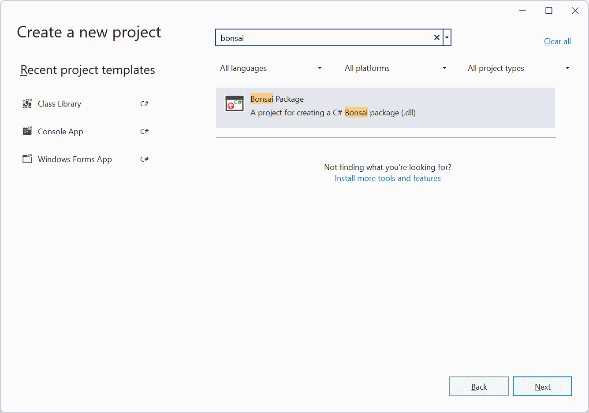
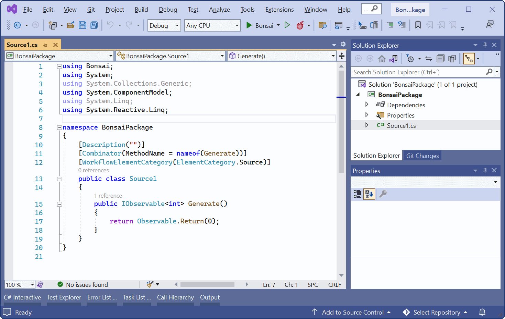
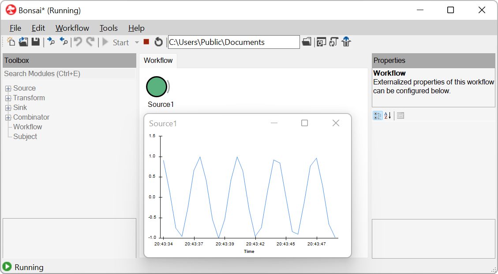
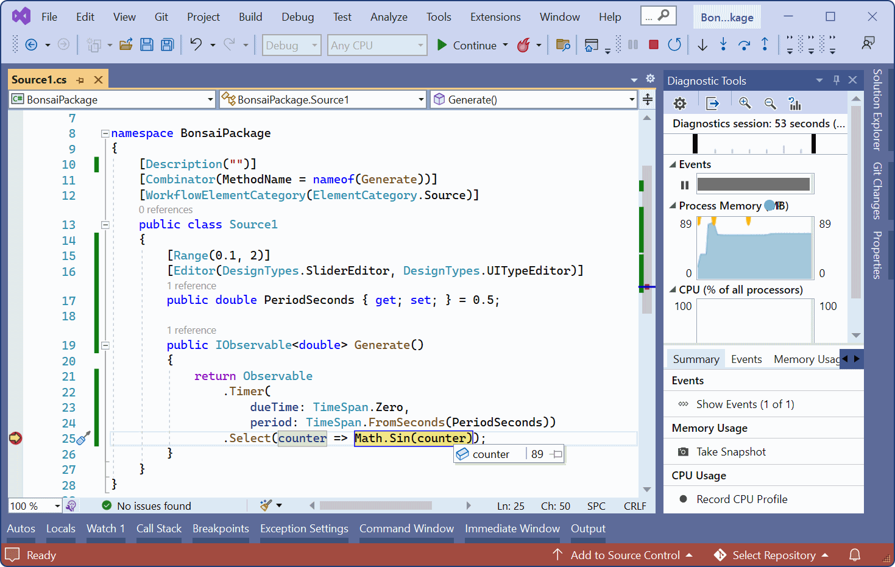
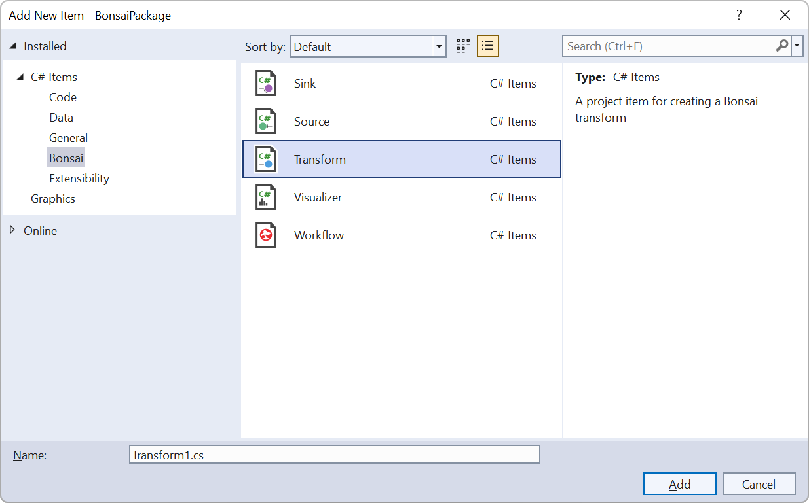
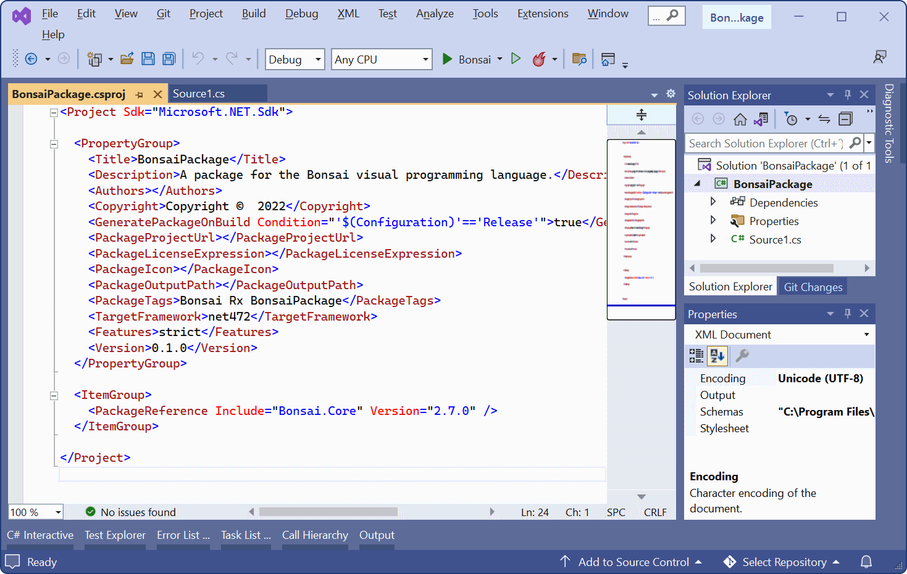

Creating a Package
The Bonsai language can be extended with custom packages, which are installed and shared using NuGet. Packages are typically written in the C# programming language, using the Visual Studio development environment. The Bonsai installer includes project templates that make it easier to create your own package project. Once you have developed and refined your custom extensions you can package the code for installing in the Bonsai editor, or sharing with the community.
Pre-requisites
Visual Studio. You can install the Community edition for free.
Bonsai VS Extensions. From the Windows Start Menu, search for the "Install Bonsai VS Extensions" shortcut and run it.
Creating a package project
Start Visual Studio.
Select the Create a new project option. In the Create a new project dialog, type
bonsaiin the search toolbox. The project template for creating a Bonsai package should now be displayed.
Give the project a name and a location, and press the
Createbutton. After the project is created, you should see that a file "Source1.cs" has been added to the solution explorer. This file contains an example implementation of a custom source.
Every Bonsai operator specifies an observable sequence using the IObservable<T> interface. The System.Reactive package provides a comprehensive library of methods used to generate and manipulate observable sequences in C#. The simplest way to implement a source is by using the methods in the Observable class.
As an example, the expression below will generate a simple periodic sinewave by applying the projection operator Select to the incremental counter sequence generated by a Timer.
[Description("")] [Combinator(MethodName = nameof(Generate))] [WorkflowElementCategory(ElementCategory.Source)] public class Source1 { public IObservable<double> Generate() { return Observable .Timer( dueTime: TimeSpan.Zero, period: TimeSpan.FromSeconds(0.5)) .Select(counter => Math.Sin(counter)); } }We can test our operator by starting the project with F5. This will automatically launch the Bonsai editor with our package preloaded in the Toolbox. Add the new
Source1node and run the workflow.
If we need to parameterize our operator, we can add new public properties to the class. Custom editors can be used to provide interactive widgets for editing the property values. Several common widgets are provided in the DesignTypes class. For example, to make the period customizable with a slider over a specified range, we can modify our source operator:
[Description("")] [Combinator(MethodName = nameof(Generate))] [WorkflowElementCategory(ElementCategory.Source)] public class Source1 { [Range(0.1, 2)] [Editor(DesignTypes.SliderEditor, DesignTypes.UITypeEditor)] public double PeriodSeconds { get; set; } = 0.5; public IObservable<double> Generate() { return Observable .Timer( dueTime: TimeSpan.Zero, period: TimeSpan.FromSeconds(PeriodSeconds)) .Select(counter => Math.Sin(counter)); } }It is also possible to debug our code while it is running by setting breakpoints, either by clicking on the left of the line we want to debug or by hitting F9 over the target code. After this, you can run the code step by step and inspect the runtime value of variables.

Finally, we can add new operators by right-clicking the project name in the solution explorer and selecting
Add>New Item. Templates for creating the most common operator types are available under the Bonsai category.
For example, we can create a simple transform that tests whether each of the values emitted by the sinewave generator is positive:
[Combinator] [Description("")] [WorkflowElementCategory(ElementCategory.Transform)] public class Transform1 { public IObservable<bool> Process(IObservable<double> source) { return source.Select(input => input > 0); } }
Publishing a package project
Double-click the name of the project in the Visual Studio Solution Explorer to open up the package metadata.

Fill in or edit all the relevant metadata fields. These are critical to correctly communicate the provenance of your project to other users. Please pay special attention to
Title,Description,Authors,Copyright,PackageProjectUrl,PackageLicenseExpression,PackageIconandPackageTagsto make sure that they correctly describe your project. Make sure thatVersionis correctly assigned in every new release to avoid problems during package updates.Tip
Use version suffixes for sharing prerelease versions for testing, e.g.
0.1.0-alpha. If a package version has a prerelease suffix, it will only be listed by the package manager if the checkbox "Include prerelease" is checked.Build the project in Release mode. If all metadata is correctly specified, the build process should generate a
.nupkgfile as part of the output. By default, it will be placed in the samebin\Releasefolder where the project assembly (.dll) is generated.To install the package in the editor, configure a new package source pointing to a folder containing your generated
.nupkgfile, or simply copy the.nupkgfile to theGalleryfolder of your local Bonsai installation. The package should then be listed in the package manager (make sure to select the package source where the package is located if you cannot find it in the list).Warning
If you have your custom package installed in the same editor used to debug the source code, Bonsai will prefer the installed package over the compiled source code library. In this case, either uninstall the package, or use a local Bonsai installation.
Note
If you would like to share the package with the broader Bonsai community, consider publishing your package in the Bonsai Community feed. Click the
Connect to Feedbutton for more details on how to push packages to the feed.